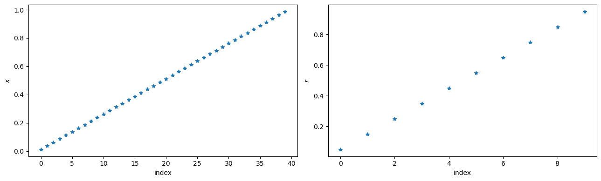
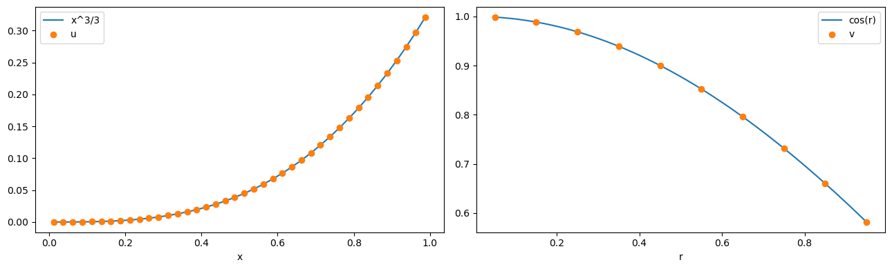
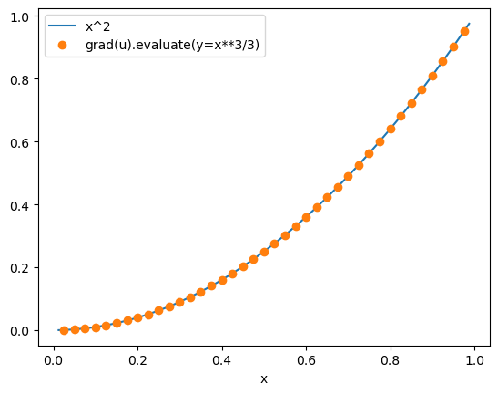
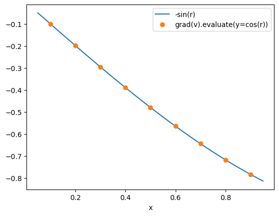
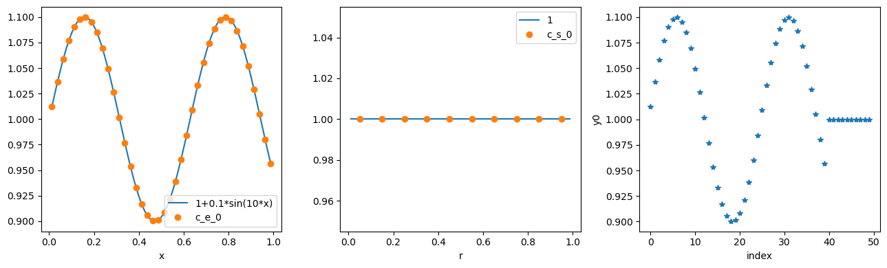

Tip
An interactive online version of this notebook is available, which can be
accessed via

Alternatively, you may download this notebook and run it offline.
Finite Volume Discretisation#
In this notebook, we explain the discretisation process that converts an expression tree, representing a model, to a linear algebra tree that can be evaluated by the solvers.
We use Finite Volumes as an example of a spatial method, since it is the default spatial method for most PyBaMM models. This is a good spatial method for battery problems as it is conservative: for lithium-ion battery models, we can be sure that the total amount of lithium in the system is constant. For more details on the Finite Volume method, see Randall Leveque’s book.
This notebook is structured as follows:
Setting up a discretisation. Overview of the parameters that are passed to the discretisation
Discretisations and spatial methods. Operations that are common to most spatial methods:
Discretising a spatial variable (e.g. \(x\))
Discretising a variable (e.g. concentration)
Example: Finite Volume operators. Finite Volume implementation of some useful operators:
Gradient operator
Divergence operator
Integral operator
Example: Discretising a simple model. Setting up and solving a simple model, using Finite Volumes as the spatial method
Setting up a Discretisation#
We first import pybamm and some useful other modules, and change our working directory to the root of the PyBaMM folder:
[1]:
%pip install "pybamm[plot,cite]" -q # install PyBaMM if it is not installed
import os
import matplotlib.pyplot as plt
import numpy as np
import pybamm
os.chdir(pybamm.__path__[0] + "/..")
Note: you may need to restart the kernel to use updated packages.
To set up a discretisation, we must create a geometry, mesh this geometry, and then create the discretisation with the appropriate spatial method(s). The easiest way to create a geometry is to the inbuilt battery geometry:
[2]:
parameter_values = pybamm.ParameterValues(
values={
"Negative particle radius [m]": 0.5,
"Positive particle radius [m]": 0.6,
"Negative electrode thickness [m]": 0.3,
"Separator thickness [m]": 0.2,
"Positive electrode thickness [m]": 0.3,
}
)
geometry = pybamm.battery_geometry()
parameter_values.process_geometry(geometry)
We then use this geometry to create a mesh, which for this example consists of uniform 1D submeshes
[3]:
submesh_types = {
"negative electrode": pybamm.Uniform1DSubMesh,
"separator": pybamm.Uniform1DSubMesh,
"positive electrode": pybamm.Uniform1DSubMesh,
"negative particle": pybamm.Uniform1DSubMesh,
"positive particle": pybamm.Uniform1DSubMesh,
"current collector": pybamm.SubMesh0D,
}
var = pybamm.standard_spatial_vars
var_pts = {var.x_n: 15, var.x_s: 10, var.x_p: 15, var.r_n: 10, var.r_p: 10}
mesh = pybamm.Mesh(geometry, submesh_types, var_pts)
Finally, we can use the mesh to create a discretisation, using Finite Volumes as the spatial method for this example
[4]:
spatial_methods = {
"macroscale": pybamm.FiniteVolume(),
"negative particle": pybamm.FiniteVolume(),
"positive particle": pybamm.FiniteVolume(),
}
disc = pybamm.Discretisation(mesh, spatial_methods)
Discretisations and Spatial Methods#
Spatial Variables#
Spatial variables, such as \(x\) and \(r\), are converted to pybamm.Vector nodes
[5]:
# Set up
macroscale = ["negative electrode", "separator", "positive electrode"]
x_var = pybamm.SpatialVariable("x", domain=macroscale)
r_var = pybamm.SpatialVariable("r", domain=["negative particle"])
# Discretise
x_disc = disc.process_symbol(x_var)
r_disc = disc.process_symbol(r_var)
print(f"x_disc is a {type(x_disc)}")
print(f"r_disc is a {type(r_disc)}")
# Evaluate
x = x_disc.evaluate()
r = r_disc.evaluate()
f, (ax1, ax2) = plt.subplots(1, 2, figsize=(13, 4))
ax1.plot(x, "*")
ax1.set_xlabel("index")
ax1.set_ylabel(r"$x$")
ax2.plot(r, "*")
ax2.set_xlabel("index")
ax2.set_ylabel(r"$r$")
plt.tight_layout()
plt.show()
x_disc is a <class 'pybamm.expression_tree.vector.Vector'>
r_disc is a <class 'pybamm.expression_tree.vector.Vector'>

We define y_macroscale, y_microscale and y_scalar for evaluation and visualisation of results below
[6]:
y_macroscale = x**3 / 3
y_microscale = np.cos(r)
y_scalar = np.array([[5]])
y = np.concatenate([y_macroscale, y_microscale, y_scalar])
Variables#
In this notebook, we will work with three variables u, v, w.
[7]:
u = pybamm.Variable(
"u", domain=macroscale
) # u is a variable in the macroscale (e.g. electrolyte potential)
v = pybamm.Variable(
"v", domain=["negative particle"]
) # v is a variable in the negative particle (e.g. particle concentration)
w = pybamm.Variable(
"w"
) # w is a variable without a domain (e.g. time, average concentration)
variables = [u, v, w]
Before discretising, trying to evaluate the variables raises a NotImplementedError:
[8]:
try:
u.evaluate()
except NotImplementedError as e:
print(e)
method self.evaluate() not implemented for symbol u of type <class 'pybamm.expression_tree.variable.Variable'>
For any spatial method, a pybamm.Variable gets converted to a pybamm.StateVector which, when evaluated, takes the appropriate slice of the input vector y.
[9]:
# Pass the list of variables to the discretisation to calculate the slices to be used (order matters here!)
disc.set_variable_slices(variables)
# Discretise the variables
u_disc = disc.process_symbol(u)
v_disc = disc.process_symbol(v)
w_disc = disc.process_symbol(w)
# Print the outcome
print(f"Discretised u is the StateVector {u_disc}")
print(f"Discretised v is the StateVector {v_disc}")
print(f"Discretised w is the StateVector {w_disc}")
Discretised u is the StateVector y[0:40]
Discretised v is the StateVector y[40:50]
Discretised w is the StateVector y[50:51]
Since the variables have been passed to disc in the order [u,v,w], they each read the appropriate part of y when evaluated:
[10]:
x_fine = np.linspace(x[0], x[-1], 1000)
r_fine = np.linspace(r[0], r[-1], 1000)
fig, (ax1, ax2) = plt.subplots(1, 2, figsize=(13, 4))
ax1.plot(x_fine, x_fine**3 / 3, x, u_disc.evaluate(y=y), "o")
ax1.set_xlabel("x")
ax1.legend(["x^3/3", "u"], loc="best")
ax2.plot(r_fine, np.cos(r_fine), r, v_disc.evaluate(y=y), "o")
ax2.set_xlabel("r")
ax2.legend(["cos(r)", "v"], loc="best")
plt.tight_layout()
plt.show()

[11]:
print(f"w = {w_disc.evaluate(y=y)}")
w = [[5.]]
Finite Volume Operators#
Gradient operator#
The gradient operator is converted to a Matrix-StateVector multiplication. In 1D, the gradient operator is equivalent to \(\partial/\partial x\) on the macroscale and \(\partial/\partial r\) on the microscale. In Finite Volumes, we take the gradient of an object on nodes (shape (n,)), which returns an object on the edges (shape (n-1,)).
[12]:
grad_u = pybamm.grad(u)
grad_u_disc = disc.process_symbol(grad_u)
grad_u_disc.render()
@
├── Sparse Matrix (39, 40)
└── y[0:40]
The Matrix in grad_u_disc is the standard [-1,1] sparse matrix, divided by the step sizes dx:
[13]:
macro_mesh = mesh.combine_submeshes(*macroscale)
print("gradient matrix is:\n")
print(
f"1/dx *\n{macro_mesh.d_nodes[:, np.newaxis] * grad_u_disc.children[0].entries.toarray()}"
)
gradient matrix is:
1/dx *
[[-1. 1. 0. ... 0. 0. 0.]
[ 0. -1. 1. ... 0. 0. 0.]
[ 0. 0. -1. ... 0. 0. 0.]
...
[ 0. 0. 0. ... 1. 0. 0.]
[ 0. 0. 0. ... -1. 1. 0.]
[ 0. 0. 0. ... 0. -1. 1.]]
When evaluated with y_macroscale=x**3/3, grad_u_disc is equal to x**2 as expected:
[14]:
x_edge = macro_mesh.edges[1:-1] # note that grad_u_disc is evaluated on the node edges
fig, ax = plt.subplots()
ax.plot(x_fine, x_fine**2, x_edge, grad_u_disc.evaluate(y=y), "o")
ax.set_xlabel("x")
legend = ax.legend(["x^2", "grad(u).evaluate(y=x**3/3)"], loc="best")
plt.show()

Similary, we can create, discretise and evaluate the gradient of v, which is a variable in the negative particles. Note that the syntax for doing this is identical: we do not need to explicitly specify that we want the gradient in r, since this is inferred from the domain of v.
[15]:
v.domain
[15]:
['negative particle']
[16]:
grad_v = pybamm.grad(v)
grad_v_disc = disc.process_symbol(grad_v)
print("grad(v) tree is:\n")
grad_v_disc.render()
micro_mesh = mesh["negative particle"]
print("\n gradient matrix is:\n")
print(
f"1/dr *\n{micro_mesh.d_nodes[:, np.newaxis] * grad_v_disc.children[0].entries.toarray()}"
)
r_edge = micro_mesh.edges[1:-1] # note that grad_u_disc is evaluated on the node edges
fig, ax = plt.subplots()
ax.plot(r_fine, -np.sin(r_fine), r_edge, grad_v_disc.evaluate(y=y), "o")
ax.set_xlabel("x")
legend = ax.legend(["-sin(r)", "grad(v).evaluate(y=cos(r))"], loc="best")
plt.show()
grad(v) tree is:
@
├── Sparse Matrix (9, 10)
└── y[40:50]
gradient matrix is:
1/dr *
[[-1. 1. 0. 0. 0. 0. 0. 0. 0. 0.]
[ 0. -1. 1. 0. 0. 0. 0. 0. 0. 0.]
[ 0. 0. -1. 1. 0. 0. 0. 0. 0. 0.]
[ 0. 0. 0. -1. 1. 0. 0. 0. 0. 0.]
[ 0. 0. 0. 0. -1. 1. 0. 0. 0. 0.]
[ 0. 0. 0. 0. 0. -1. 1. 0. 0. 0.]
[ 0. 0. 0. 0. 0. 0. -1. 1. 0. 0.]
[ 0. 0. 0. 0. 0. 0. 0. -1. 1. 0.]
[ 0. 0. 0. 0. 0. 0. 0. 0. -1. 1.]]

Boundary conditions#
If the discretisation is provided with boundary conditions, appropriate ghost nodes are concatenated onto the variable, and a larger gradient matrix is used. The ghost nodes are chosen based on the value of the first/last node in the variable and the boundary condition. For a Dirichlet boundary condition \(u=a\) on the left-hand boundary, we set the value of the left ghost node to be equal to
where \(u[0]\) is the value of \(u\) in the left-most cell in the domain. Similarly, for a Dirichlet condition \(u=b\) on the right-hand boundary, we set the right ghost node to be
[17]:
disc.bcs = {
u: {
"left": (pybamm.Scalar(1), "Dirichlet"),
"right": (pybamm.Scalar(2), "Dirichlet"),
}
}
grad_u_disc = disc.process_symbol(grad_u)
print("The gradient object is:")
(grad_u_disc.render())
u_eval = grad_u_disc.evaluate(y=y)
dx = np.diff(macro_mesh.nodes)[-1]
print(f"The value of u on the left-hand boundary is {y[0] - dx * u_eval[0] / 2}")
print(f"The value of u on the right-hand boundary is {y[1] + dx * u_eval[-1] / 2}")
The gradient object is:
+
├── Column vector of length 41
└── @
├── Sparse Matrix (41, 40)
└── y[0:40]
The value of u on the left-hand boundary is [1.]
The value of u on the right-hand boundary is [1.67902865]
For a Neumann boundary condition \(\partial u/\partial x=c\) on the left-hand boundary, we set the value of the left ghost node to be
where \(dx\) is the step size at the left-hand boundary. For a Neumann boundary condition \(\partial u/\partial x=d\) on the right-hand boundary, we set the value of the right ghost node to be
[20]:
disc.bcs = {
u: {"left": (pybamm.Scalar(3), "Neumann"), "right": (pybamm.Scalar(4), "Neumann")}
}
grad_u_disc = disc.process_symbol(grad_u)
print("The gradient object is:")
(grad_u_disc.render())
grad_u_eval = grad_u_disc.evaluate(y=y)
print(f"The gradient on the left-hand boundary is {grad_u_eval[0]}")
print(f"The gradient of u on the right-hand boundary is {grad_u_eval[-1]}")
The gradient object is:
+
├── Column vector of length 41
└── @
├── Sparse Matrix (41, 40)
└── y[0:40]
The gradient on the left-hand boundary is [3.]
The gradient of u on the right-hand boundary is [4.]
We can mix the types of the boundary conditions:
[21]:
disc.bcs = {
u: {"left": (pybamm.Scalar(5), "Dirichlet"), "right": (pybamm.Scalar(6), "Neumann")}
}
grad_u_disc = disc.process_symbol(grad_u)
print("The gradient object is:")
(grad_u_disc.render())
grad_u_eval = grad_u_disc.evaluate(y=y)
u_eval = grad_u_disc.children[1].evaluate(y=y)
print(f"The value of u on the left-hand boundary is {(u_eval[0] + u_eval[1]) / 2}")
print(f"The gradient on the right-hand boundary is {grad_u_eval[-1]}")
The gradient object is:
+
├── Column vector of length 41
└── @
├── Sparse Matrix (41, 40)
└── y[0:40]
The value of u on the left-hand boundary is [0.00036458]
The gradient on the right-hand boundary is [6.]
Robin boundary conditions can be implemented by specifying a Neumann condition where the flux depends on the variable.
Divergence operator#
Before computing the Divergence operator, we set up Neumann boundary conditions. The behaviour with Dirichlet boundary conditions is very similar.
[22]:
disc.bcs = {
u: {"left": (pybamm.Scalar(-1), "Neumann"), "right": (pybamm.Scalar(1), "Neumann")}
}
Now we can process div(grad(u)), converting it to a Matrix-Vector multiplication, plus a vector for the boundary conditions. Since we have Neumann boundary conditions, the divergence of an object of size (n+1,) has size (n,), and so div(grad) of an object of size (n,) has size (n,)
[23]:
div_grad_u = pybamm.div(grad_u)
div_grad_u_disc = disc.process_symbol(div_grad_u)
div_grad_u_disc.render()
+
├── Column vector of length 40
└── @
├── Sparse Matrix (40, 40)
└── y[0:40]
The div(grad) matrix is automatically simplified to the well-known [1,-2,1] matrix (divided by the square of the distance between the edges), except in the first and last rows for boundary conditions
[24]:
print("div(grad) matrix is:\n")
print(
"1/dx^2 * \n{}".format(
macro_mesh.d_edges[:, np.newaxis] ** 2
* div_grad_u_disc.right.left.entries.toarray()
)
)
div(grad) matrix is:
1/dx^2 *
[[-1. 1. 0. ... 0. 0. 0.]
[ 1. -2. 1. ... 0. 0. 0.]
[ 0. 1. -2. ... 0. 0. 0.]
...
[ 0. 0. 0. ... -2. 1. 0.]
[ 0. 0. 0. ... 1. -2. 1.]
[ 0. 0. 0. ... 0. 1. -1.]]
Integral operator#
Finally, we can define an integral operator, which integrates the variable across the domain specified by the integration variable.
[25]:
int_u = pybamm.Integral(u, x_var)
int_u_disc = disc.process_symbol(int_u)
print(f"int(u) = {int_u_disc.evaluate(y=y)} is approximately equal to 1/12, {1 / 12}")
# We divide v by r to evaluate the integral more easily
int_v_over_r2 = pybamm.Integral(v / r_var**2, r_var)
int_v_over_r2_disc = disc.process_symbol(int_v_over_r2)
print(
f"int(v/r^2) = {int_v_over_r2_disc.evaluate(y=y)} is approximately equal to 4 * pi * sin(1), {4 * np.pi * np.sin(1)}"
)
int(u) = [[0.08330729]] is approximately equal to 1/12, 0.08333333333333333
int(v/r^2) = [[11.07985772]] is approximately equal to 4 * pi * sin(1), 10.574236256325824
The integral operators are also Matrix-Vector multiplications
[26]:
print("int(u):\n")
int_u_disc.render()
print("\nint(v):\n")
int_v_over_r2_disc.render()
int(u):
@
├── Sparse Matrix (1, 40)
└── y[0:40]
int(v):
@
├── Sparse Matrix (1, 10)
└── *
├── Column vector of length 10
└── y[40:50]
[27]:
int_u_disc.children[0].evaluate() / macro_mesh.d_edges
[27]:
matrix([[1., 1., 1., 1., 1., 1., 1., 1., 1., 1., 1., 1., 1., 1., 1., 1.,
1., 1., 1., 1., 1., 1., 1., 1., 1., 1., 1., 1., 1., 1., 1., 1.,
1., 1., 1., 1., 1., 1., 1., 1.]])
Discretising a model#
We can now discretise a whole model. We create, and discretise, a simple model for the concentration in the electrolyte and the concentration in the particles, and discretise it with a single command:
disc.process_model(model)
[28]:
model = pybamm.BaseModel()
c_e = pybamm.Variable("electrolyte concentration", domain=macroscale)
N_e = pybamm.grad(c_e)
c_s = pybamm.Variable("particle concentration", domain=["negative particle"])
N_s = pybamm.grad(c_s)
model.rhs = {c_e: pybamm.div(N_e) - 5, c_s: pybamm.div(N_s)}
model.boundary_conditions = {
c_e: {"left": (np.cos(0), "Neumann"), "right": (np.cos(10), "Neumann")},
c_s: {"left": (0, "Neumann"), "right": (-1, "Neumann")},
}
model.initial_conditions = {c_e: 1 + 0.1 * pybamm.sin(10 * x_var), c_s: 1}
# Create a new discretisation and process model
disc2 = pybamm.Discretisation(mesh, spatial_methods)
disc2.process_model(model);
The initial conditions are discretised to vectors, and an array of concatenated initial conditions is created.
[29]:
c_e_0 = model.initial_conditions[c_e].evaluate()
c_s_0 = model.initial_conditions[c_s].evaluate()
y0 = model.concatenated_initial_conditions.evaluate()
fig, (ax1, ax2, ax3) = plt.subplots(1, 3, figsize=(13, 4))
ax1.plot(x_fine, 1 + 0.1 * np.sin(10 * x_fine), x, c_e_0, "o")
ax1.set_xlabel("x")
ax1.legend(["1+0.1*sin(10*x)", "c_e_0"], loc="best")
ax2.plot(x_fine, np.ones_like(r_fine), r, c_s_0, "o")
ax2.set_xlabel("r")
ax2.legend(["1", "c_s_0"], loc="best")
ax3.plot(y0, "*")
ax3.set_xlabel("index")
ax3.set_ylabel("y0")
plt.tight_layout()
plt.show()

The discretised rhs can be evaluated, for example at 0,y0:
[30]:
rhs_c_e = model.rhs[c_e].evaluate(0, y0)
rhs_c_s = model.rhs[c_s].evaluate(0, y0)
rhs = model.concatenated_rhs.evaluate(0, y0)
fig, (ax1, ax2, ax3) = plt.subplots(1, 3, figsize=(13, 4))
ax1.plot(x_fine, -10 * np.sin(10 * x_fine) - 5, x, rhs_c_e, "o")
ax1.set_xlabel("x")
ax1.set_ylabel("rhs_c_e")
ax1.legend(["1+0.1*sin(10*x)", "c_e_0"], loc="best")
ax2.plot(r, rhs_c_s, "o")
ax2.set_xlabel("r")
ax2.set_ylabel("rhs_c_s")
ax3.plot(rhs, "*")
ax3.set_xlabel("index")
ax3.set_ylabel("rhs")
plt.tight_layout()
plt.show()

The function model.concatenated_rhs is then passed to the solver to solve the model, with initial conditions model.concatenated_initial_conditions.
Upwinding and downwinding#
If a system is advection-dominated (Peclet number greater than around 40), then it is important to use upwinding (if velocity is positive) or downwinding (if velocity is negative) to obtain accurate results. To see this, consider the following model (without upwinding)
[31]:
model = pybamm.BaseModel()
# Define concentration and velocity
c = pybamm.Variable(
"c", domain=["negative electrode", "separator", "positive electrode"]
)
v = pybamm.PrimaryBroadcastToEdges(
1, ["negative electrode", "separator", "positive electrode"]
)
model.rhs = {c: -pybamm.div(c * v) + 1}
model.initial_conditions = {c: 0}
model.boundary_conditions = {c: {"left": (0, "Dirichlet")}}
model.variables = {"c": c}
def solve_and_plot(model):
model_disc = disc.process_model(model, inplace=False)
t_eval = [0, 100]
solution = pybamm.IDAKLUSolver().solve(model_disc, t_eval)
# plot
plot = pybamm.QuickPlot(solution, ["c"], spatial_unit="m")
plot.dynamic_plot()
solve_and_plot(model)
The concentration grows indefinitely, which is clearly an incorrect solution. Instead, we can use upwinding:
[32]:
model.rhs = {c: -pybamm.div(pybamm.upwind(c) * v) + 1}
solve_and_plot(model)
This gives the expected linear steady state from 0 to 1. Similarly, if the velocity is negative, downwinding gives accurate results
[33]:
model.rhs = {c: -pybamm.div(pybamm.downwind(c) * (-v)) + 1}
model.boundary_conditions = {c: {"right": (0, "Dirichlet")}}
solve_and_plot(model)
More advanced concepts#
Since this notebook is only an introduction to the discretisation, we have not covered everything. More advanced concepts, such as the ones below, can be explored by looking into the API docs.
Gradient and divergence of microscale variables in the P2D model
Indefinite integral
If you would like detailed examples of these operations, please create an issue and we will be happy to help.
References#
The relevant papers for this notebook are:
[34]:
pybamm.print_citations()
[1] Joel A. E. Andersson, Joris Gillis, Greg Horn, James B. Rawlings, and Moritz Diehl. CasADi – A software framework for nonlinear optimization and optimal control. Mathematical Programming Computation, 11(1):1–36, 2019. doi:10.1007/s12532-018-0139-4.
[2] Charles R. Harris, K. Jarrod Millman, Stéfan J. van der Walt, Ralf Gommers, Pauli Virtanen, David Cournapeau, Eric Wieser, Julian Taylor, Sebastian Berg, Nathaniel J. Smith, and others. Array programming with NumPy. Nature, 585(7825):357–362, 2020. doi:10.1038/s41586-020-2649-2.
[3] Valentin Sulzer, Scott G. Marquis, Robert Timms, Martin Robinson, and S. Jon Chapman. Python Battery Mathematical Modelling (PyBaMM). Journal of Open Research Software, 9(1):14, 2021. doi:10.5334/jors.309.